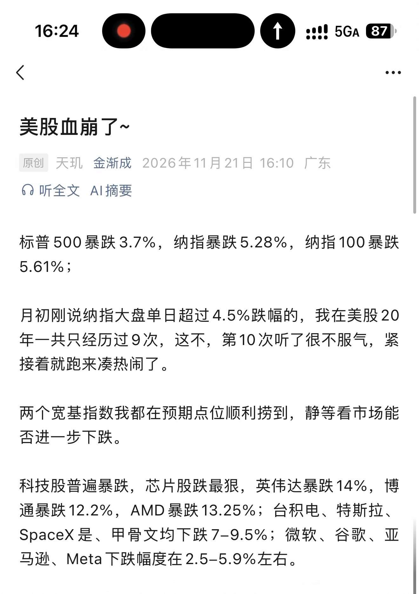
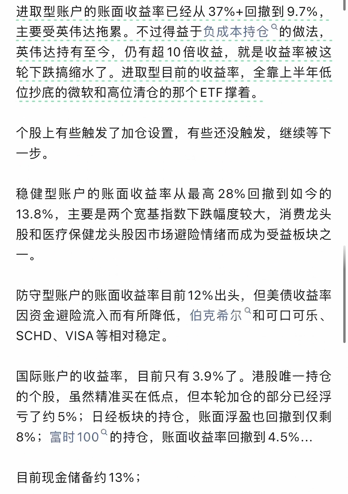
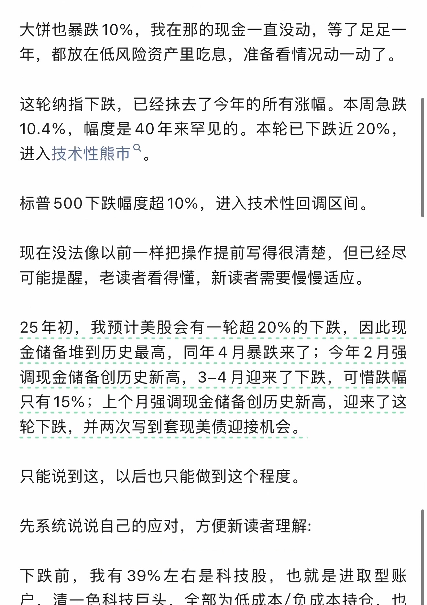
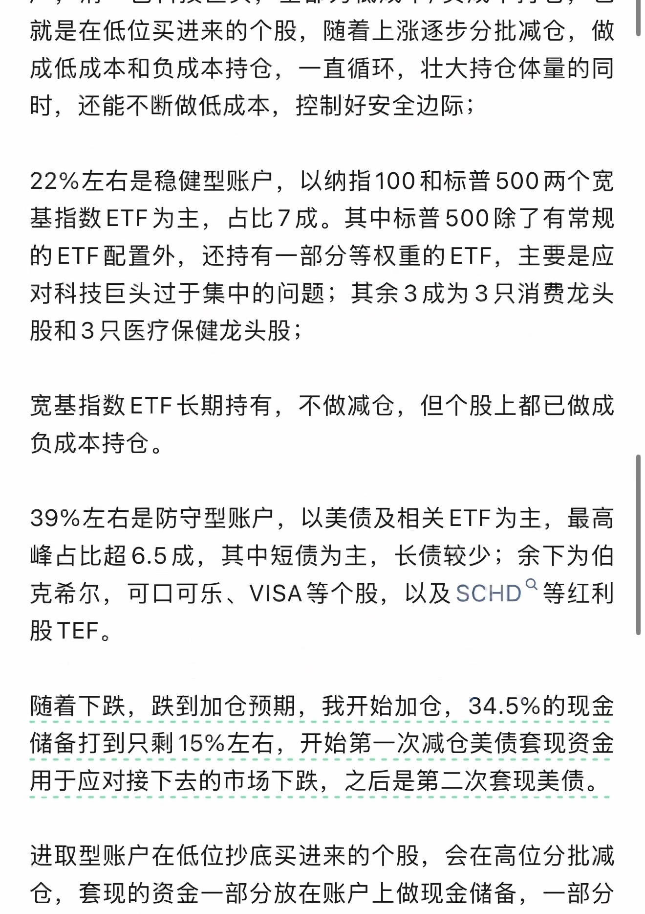
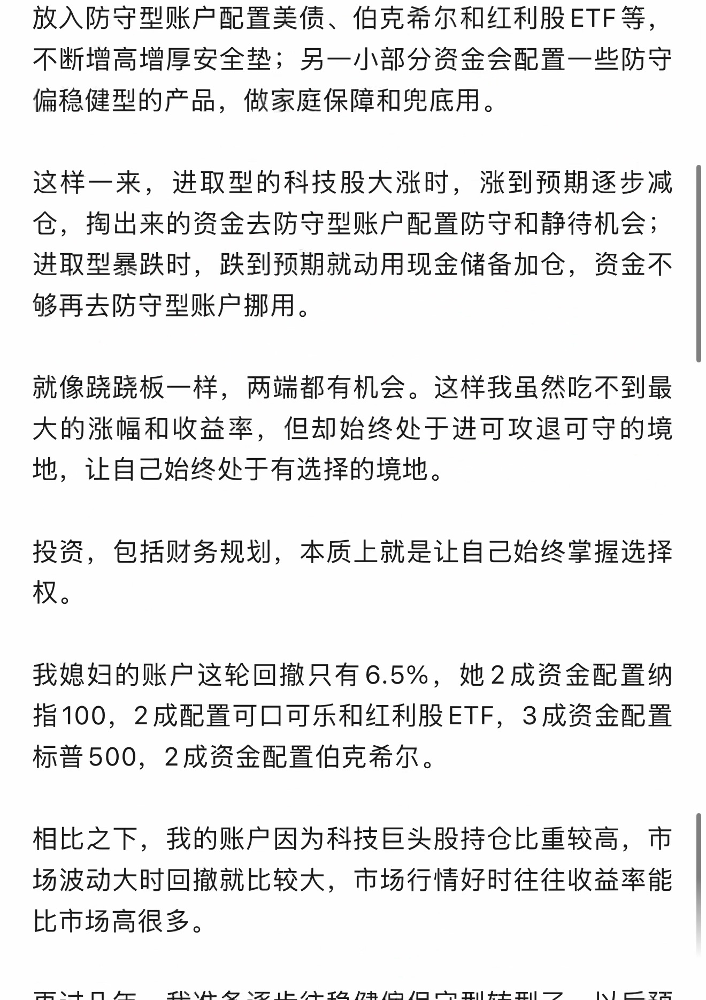
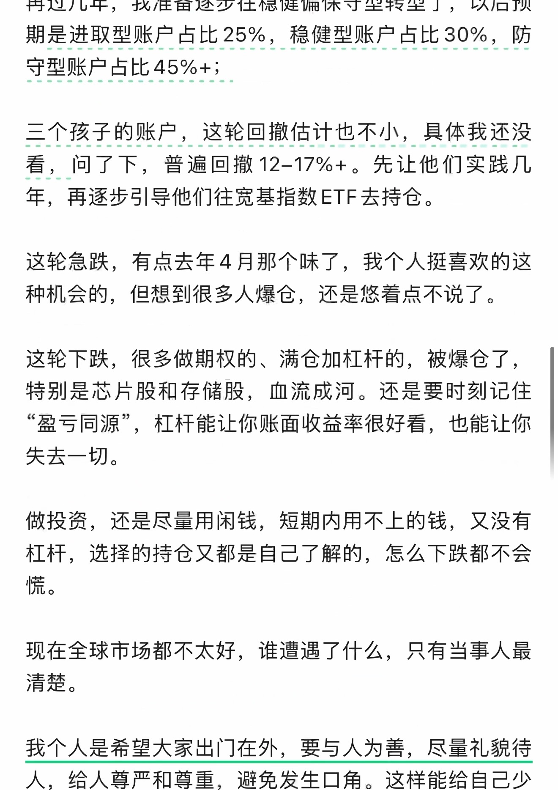
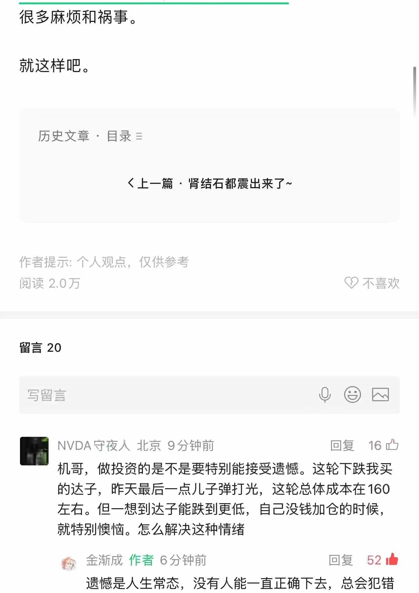
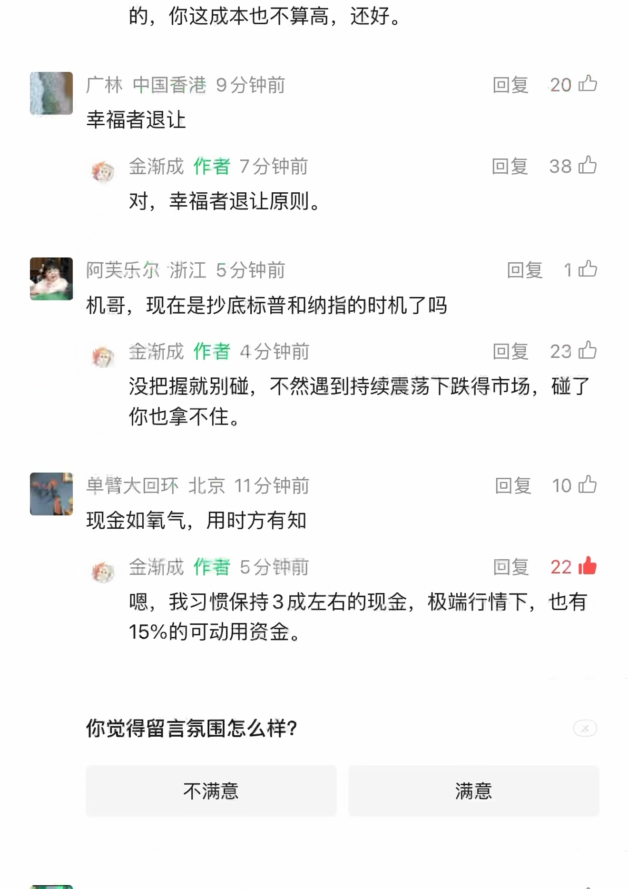
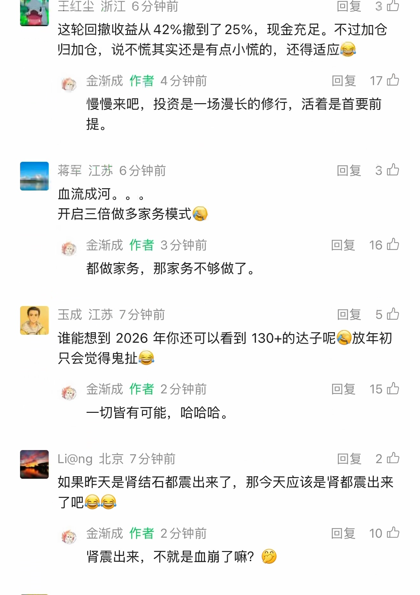
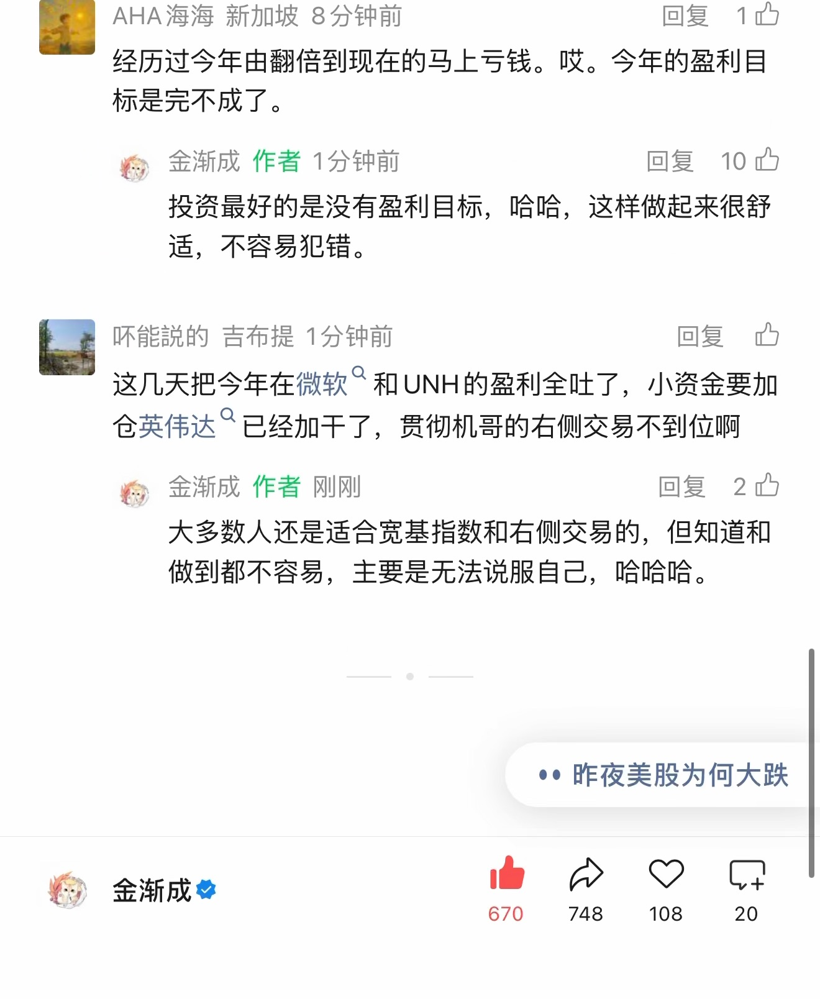

美股血崩了~
识别文字连续阅读 · 原图附后
原始 PDF 不公开，本页展示捕获页面的截图。 识别文字按页序连续显示，全部原始截图附在文末，便于对照。文字由视觉转录整理，尚未经人工逐字核对，可能存在错字、漏字、漏行、顺序或断行错误。留言与作者回复仅限截图中可见的内容，不代表完整线上留言，也未据此推断留言总数。
OCR 识别提示（待核对）
- OCR/视觉转录文字，尚未逐字校对；可能错字、漏字、漏行，数字、姓名、表情、标点及断行也可能有误，请以截图为准。
- 这里只保留 PDF 已截到的正文、留言和作者回复；截图以外的留言不在此存档中。
- 未从截图推断留言总数或回复关系；手机界面文字也可能混入 OCR。
- 方括号中的表情说明是转录注释，原始表情请对照截图。
- 页面边界仅露出少量字形的重复行归到文字主体可见的相邻页；不推断缺失内容。
识别文字
文字按截图页序整理；页边重复行仅保留一次，原始 PDF 不公开。方括号中的表情说明为转录注释。
第 1 页对照原图
[顶部状态栏]
16:24 · 5GA · 电量87%
美股血崩了~
原创 天玑 金渐成 2026年11月21日 16:10 广东
听全文 AI摘要
标普500暴跌3.7%，纳指暴跌5.28%，纳指100暴跌5.61%；
月初刚说纳指大盘单日超过4.5%跌幅的，我在美股20年一共只经历过9次，这不，第10次听了很不服气，紧接着就跑来凑热闹了。
两个宽基指数我都在预期点位顺利捞到，静等看市场能否进一步下跌。
科技股普遍暴跌，芯片股跌最狠，英伟达暴跌14%，博通暴跌12.2%，AMD暴跌13.25%；台积电、特斯拉、SpaceX是、甲骨文均下跌7-9.5%；微软、谷歌、亚马逊、Meta下跌幅度在2.5-5.9%左右。
第 2 页对照原图
进取型账户的账面收益率已经从37%+回撤到9.7%，主要受英伟达拖累。不过得益于负成本持仓的做法，英伟达持有至今，仍有超10倍收益，就是收益率被这轮下跌搞缩水了。进取型目前的收益率，全靠上半年低位抄底的微软和高位清仓的那个ETF撑着。
个股上有些触发了加仓设置，有些还没触发，继续等下一步。
稳健型账户的账面收益率从最高28%回撤到如今的13.8%，主要是两个宽基指数下跌幅度较大，消费龙头股和医疗保健龙头股因市场避险情绪而成为受益板块之一。
防守型账户的账面收益率目前12%出头，但美债收益率因资金避险流入而有所降低，伯克希尔和可口可乐、SCHD、VISA等相对稳定。
国际账户的收益率，目前只有3.9%了。港股唯一持仓的个股，虽然精准买在低点，但本轮加仓的部分已经浮亏了约5%；日经板块的持仓，账面浮盈也回撤到仅剩8%；富时100的持仓，账面收益率回撤到4.5%...
目前现金储备约13%；
第 3 页对照原图
大饼也暴跌10%，我在那的现金一直没动，等了足足一年，都放在低风险资产里吃息，准备看情况动一动了。
这轮纳指下跌，已经抹去了今年的所有涨幅。本周急跌10.4%，幅度是40年来罕见的。本轮已下跌近20%，进入技术性熊市。
标普500下跌幅度超10%，进入技术性回调区间。
现在没法像以前一样把操作提前写得很清楚，但已经尽可能提醒，老读者看得懂，新读者需要慢慢适应。
25年初，我预计美股会有一轮超20%的下跌，因此现金储备堆到历史最高，同年4月暴跌来了；今年2月强调现金储备创历史新高，3-4月迎来了下跌，可惜跌幅只有15%；上个月强调现金储备创历史新高，迎来了这轮下跌，并两次写到套现美债迎接机会。
只能说到这，以后也只能做到这个程度。
先系统说说自己的应对，方便新读者理解:
下跌前，我有39%左右是科技股，也就是进取型账户，清一色科技巨头，全部为低成本/负成本持仓，也
第 4 页对照原图
就是在低位买进来的个股，随着上涨逐步分批减仓，做成低成本和负成本持仓，一直循环，壮大持仓体量的同时，还能不断做低成本，控制好安全边际；
22%左右是稳健型账户，以纳指100和标普500两个宽基指数ETF为主，占比7成。其中标普500除了有常规的ETF配置外，还持有一部分等权重的ETF，主要是应对科技巨头过于集中的问题；其余3成为3只消费龙头股和3只医疗保健龙头股；
宽基指数ETF长期持有，不做减仓，但个股上都已做成负成本持仓。
39%左右是防守型账户，以美债及相关ETF为主，最高峰占比超6.5成，其中短债为主，长债较少；余下为伯克希尔，可口可乐、VISA等个股，以及SCHD等红利股TEF。
随着下跌，跌到加仓预期，我开始加仓，34.5%的现金储备打到只剩15%左右，开始第一次减仓美债套现资金用于应对接下去的市场下跌，之后是第二次套现美债。
进取型账户在低位抄底买进来的个股，会在高位分批减仓，套现的资金一部分放在账户上做现金储备，一部分
第 5 页对照原图
放入防守型账户配置美债、伯克希尔和红利股ETF等，不断增高增厚安全垫；另一小部分资金会配置一些防守偏稳健型的产品，做家庭保障和兜底用。
这样一来，进取型的科技股大涨时，涨到预期逐步减仓，掏出来的资金去防守型账户配置防守和静待机会；进取型暴跌时，跌到预期就动用现金储备加仓，资金不够再去防守型账户挪用。
就像跷跷板一样，两端都有机会。这样我虽然吃不到最大的涨幅和收益率，但却始终处于进可攻退可守的境地，让自己始终处于有选择的境地。
投资，包括财务规划，本质上就是让自己始终掌握选择权。
我媳妇的账户这轮回撤只有6.5%，她2成资金配置纳指100，2成配置可口可乐和红利股ETF，3成资金配置标普500，2成资金配置伯克希尔。
相比之下，我的账户因为科技巨头股持仓比重较高，市场波动大时回撤就比较大，市场行情好时往往收益率能比市场高很多。
第 6 页对照原图
再过几年，我准备逐步往稳健偏保守型转型了，以后预期是进取型账户占比25%，稳健型账户占比30%，防守型账户占比45%+；
三个孩子的账户，这轮回撤估计也不小，具体我还没看，问了下，普遍回撤12-17%+。先让他们实践几年，再逐步引导他们往宽基指数ETF去持仓。
这轮急跌，有点去年4月那个味了，我个人挺喜欢的这种机会的，但想到很多人爆仓，还是悠着点不说了。
这轮下跌，很多做期权的、满仓加杠杆的，被爆仓了，特别是芯片股和存储股，血流成河。还是要时刻记住“盈亏同源”，杠杆能让你账面收益率很好看，也能让你失去一切。
做投资，还是尽量用闲钱，短期内用不上的钱，又没有杠杆，选择的持仓又都是自己了解的，怎么下跌都不会慌。
现在全球市场都不太好，谁遭遇了什么，只有当事人最清楚。
我个人是希望大家出门在外，要与人为善，尽量礼貌待人，给人尊严和尊重，避免发生口角。这样能给自己少
第 7 页对照原图
很多麻烦和祸事。
就这样吧。
[文章导航与提示]
历史文章 · 目录
< 上一篇 · 肾结石都震出来了~
作者提示：个人观点，仅供参考
阅读 2.0万 · 不喜欢
留言 20
[留言 1]
NVDA守夜人｜北京｜9分钟前｜赞16
机哥，做投资的是不是要特别能接受遗憾。这轮下跌我买的达子，昨天最后一点儿子弹打光，这轮总体成本在160左右。但一想到达子能跌到更低，自己没钱加仓的时候，就特别懊恼。怎么解决这种情绪
[作者回复留言 1]
金渐成（作者）｜6分钟前｜赞52
遗憾是人生常态，没有人能一直正确下去，总会犯错
第 8 页对照原图
的，你这成本也不算高，还好。
[留言 2]
广林｜中国香港｜9分钟前｜赞20
幸福者退让
[作者回复留言 2]
金渐成（作者）｜7分钟前｜赞38
对，幸福者退让原则。
[留言 3]
阿芙乐尔｜浙江｜5分钟前｜赞1
机哥，现在是抄底标普和纳指的时机了吗
[作者回复留言 3]
金渐成（作者）｜4分钟前｜赞23
没把握就别碰，不然遇到持续震荡下跌得市场，碰了你也拿不住。
[留言 4]
单臂大回环｜北京｜11分钟前｜赞10
现金如氧气，用时方有知
[作者回复留言 4]
金渐成（作者）｜5分钟前｜赞22
嗯，我习惯保持3成左右的现金，极端行情下，也有15%的可动用资金。
第 9 页对照原图
[留言 5]
王红尘｜浙江｜6分钟前｜赞3
这轮回撤收益从42%撤到了25%，现金充足。不过加仓归加仓，说不慌其实还是有点小慌的，还得适应[笑哭表情]
[作者回复留言 5]
金渐成（作者）｜4分钟前｜赞17
慢慢来吧，投资是一场漫长的修行，活着是首要前提。
[留言 6]
蒋军｜江苏｜6分钟前｜赞3
血流成河。。。
开启三倍做多家务模式[捂脸哭笑表情]
[作者回复留言 6]
金渐成（作者）｜3分钟前｜赞16
都做家务，那家务不够做了。
[留言 7]
玉成｜江苏｜7分钟前｜赞5
谁能想到 2026 年你还可以看到 130+的达子呢[捂脸哭笑表情]放年初只会觉得鬼扯[笑哭表情]
[作者回复留言 7]
金渐成（作者）｜2分钟前｜赞15
一切皆有可能，哈哈哈。
[留言 8]
Li@ng｜北京｜7分钟前｜赞2
如果昨天是肾结石都震出来了，那今天应该是肾都震出来了吧[笑哭表情][笑哭表情]
[作者回复留言 8]
金渐成（作者）｜2分钟前｜赞10
肾震出来，不就是血崩了嘛？[捂嘴偷笑表情]
第 10 页对照原图
[留言 9]
AHA海海｜新加坡｜8分钟前｜赞1
经历过今年由翻倍到现在的马上亏钱。哎。今年的盈利目标是完不成了。
[作者回复留言 9]
金渐成（作者）｜1分钟前｜赞10
投资最好的是没有盈利目标，哈哈，这样做起来很舒适，不容易犯错。
[留言 10]
吥能說的｜吉布提｜1分钟前
这几天把今年在微软和UNH的盈利全吐了，小资金要加仓英伟达已经加干了，贯彻机哥的右侧交易不到位啊
[作者回复留言 10]
金渐成（作者）｜刚刚｜赞2
大多数人还是适合宽基指数和右侧交易的，但知道和做到都不容易，主要是无法说服自己，哈哈哈。
[底部界面]
金渐成（认证标记）
点赞 670 · 分享 748 · 喜欢 108 · 留言 20
原始图片 · 10 页
第 1 页 · 原始截图


第 2 页 · 原始截图


第 3 页 · 原始截图


第 4 页 · 原始截图


第 5 页 · 原始截图


第 6 页 · 原始截图


第 7 页 · 原始截图


第 8 页 · 原始截图


第 9 页 · 原始截图


第 10 页 · 原始截图


按日期浏览全部来源（同日按条目标识排序）
回到页首